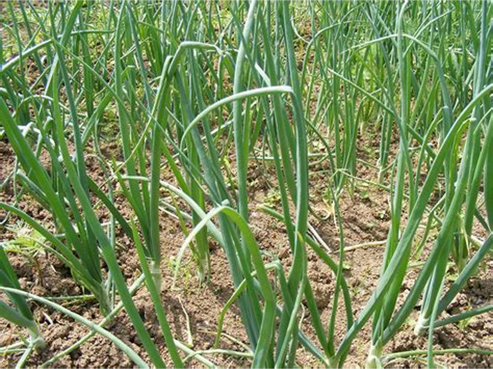
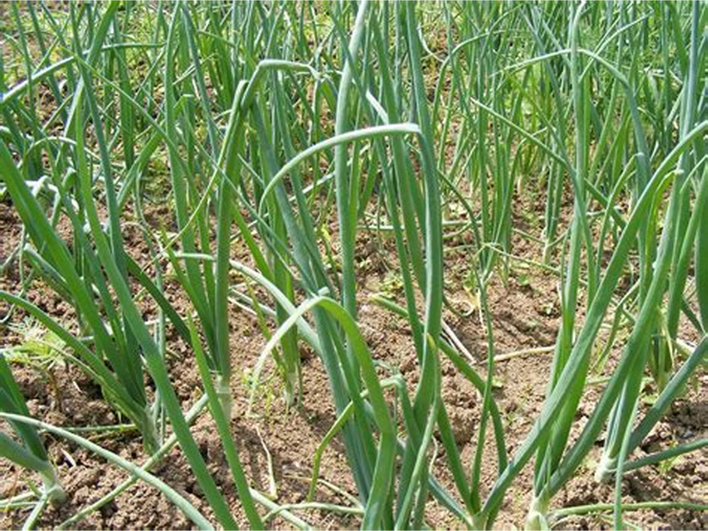

प्याज की खेती और रोग रोकथाम

 

प्याज की खेती के लिए एक एकड़ मे कम से कम 3-3.50 किलो बीज की आवश्यकता होती है
अगर प्याज की खेती रबी की है तो तो पौध तयार करने का सही समय नवम्बर से दिसम्बर महिने मे कि जाए पौध को लगाने के 40-50 दिन के बाद पौध को खेत मे लगा सकते हैं
दूसरी तरफ अगर आप खरीफ की प्याज की खेती करते हैं तो पौध की तयारी जून – जुलाई में तयार कर लेनी है उसके 40 दिन बाद खेत मे रोपाई कर देनी है
प्याज की खेती (pyaj ki kheti) को किसी भी उपजाऊ भूमि पर उगाया जा सकता है
लेकिन बालू दोमट मिट्टी और जलोड मिट्टी प्याज की खेती के लिए सबसे अच्छी भूमि मानी जाती है रेतीली भूमि प्याज की खेती के लिए उपयोक्त नहीं होती
प्याज की खेती के लिए मिट्टी का PH मान 6-7 होना जरूरी है प्याज की खेती के लिए 15-30 C तक का तापमान होना चाहिए बारिश 650-750mm की जरूरत होती है
प्याज की खेती मे ज्यादा उपज लेने के लिए उचित दूरी पर पौध लगाना जरूरी है रोपाई के समय पौध की दूरी 15-18cm और पौधे के बीच का दूरी 7-10 cm होनी चाहिए
नर्सरी तयार करते समय बीज 1-2cm तक गहरी पर बोना चाहिए बिजाई के लिए रिपाई का प्रयोग करना चाहिय
प्याज के खेती केलिए जमीन की तैयारी
मिट्टी को सबसे पहले 3-4 बार जुताई करनी चाहिए भूमि मे जैविक खाद का प्रयोग जरूर करे फिर खेत को छोटे छोटे भागों मे बाट ले
प्याज की खेती मे अधिक उपज लेने के लिए पोषक तत्व की जरूरत होती गोबर की खाद रोपाई से एक महीना पहले डाल देना चाहिए
सुपर का एक कट्टा (50kg) और पोटाश 50kg प्रति 2.50 एकड़ मे दी जानी चाहिए
इसके बाद सल्फर 25kg व 5kg zinc प्याज की गुणवत्ता बढ़ाने मे मदद करेगा
इसके बाद रोपाई करे और लगातर पानी देते रहे क्युकी प्याज की खेती मे पानी की ज्यादा जरूरत होती है
प्याज के खेती में पौधों की सिचाई
प्याज की खेती मे सिंचाई के लिए ड्रिप विधि का प्रयोग करना सही रहता है क्युकी इसमे पानी की कि भी बचत होती है और एक एक पौधे तक पानी पहुँच जाता है
प्याज की खेती मे 10-12 बार सिंचाई की आवश्यकता होती है प्याज की खेती मे रोपाई के तुरन्त बाद पहली सिंचाई करनी होती है इसके बाद खेत में हल्की नमी बनी रहती है
प्याज में खरपतवार नाशक /नियंत्रक
प्याज की खेती मे सबसे पहले खेत की नलाई करवानी चाहिए उसके बाद नियमित तोर पर दवाई का छिड़कना जरूरी है
अगर पूरी तरह खेत साफ़ करना है तो khurpi से पूरा खेत साफ़ कर दे प्याज की खेती मे थरीप्स, सूंडी, जामुनी धब्बे और तने का झुलस रोग ज्यादा होते हैं
प्याज की खेती की कटाई या तुडाई
प्याज की खेती रोपाई के 4-5 महिने बाद उपज देने के लिए तयार हो जाती है जब इसके पौधे पीले होकर गिर जाए
तो आप इसकी कताई कर सकते हैं इसके अलावा मंडी मे प्याज का भाव भी देखा जाता है कि फ़सल की कटाई कब करनी चाहिए
प्याज को हाथ से उखाड़ देते हैं उसके बाद प्याज को नमी को खत्म करने के लिए खेत मे छोड़ देना चाहिए
प्याज की खेती मे एक एकड़ मे 100 क्विंटल तक का उत्पादन हो सकता है अगर प्याज में कोई बीमारी ना लगे और सही समय पर सिंचाई हो तो